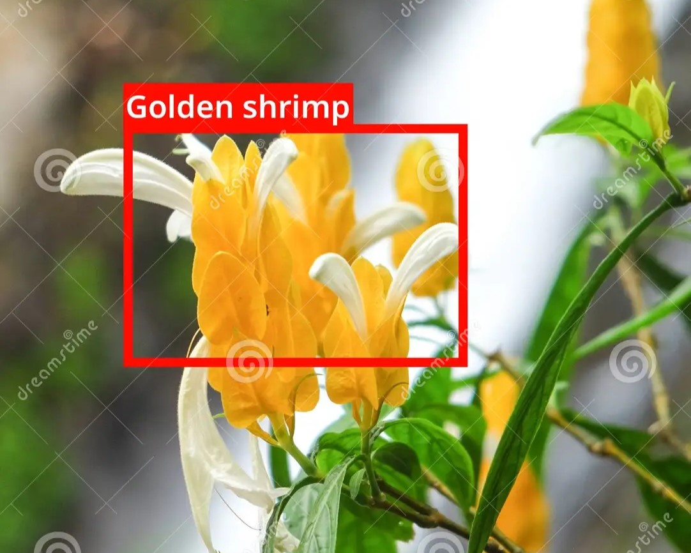
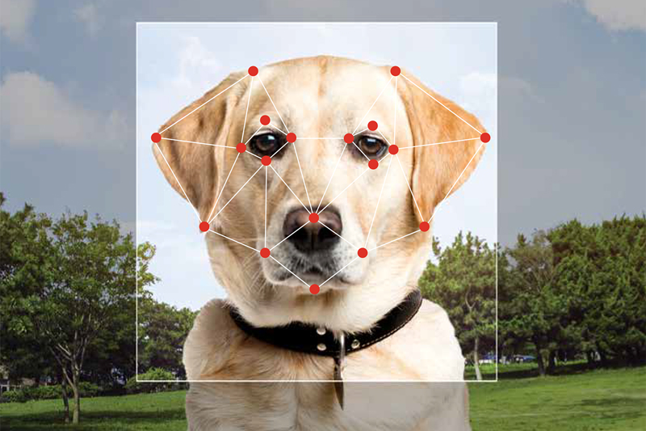
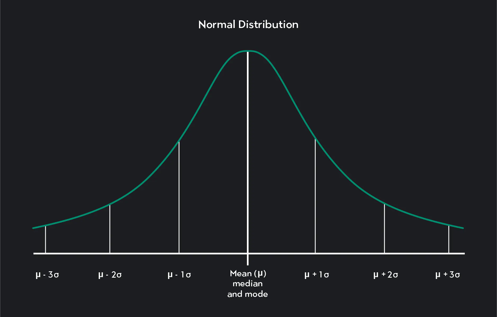

In this project, we employed the VGG11 convolutional neural network architecture which has been pre-trained on hundreds of thousands of images, as a fundamental component of our overall network structure. Our primary objective was to train an image classifier for various species of flowers. To achieve this, we created a new untrained feed-forward network as a classifier and then the classifier layers using backpropagation on the VGG11 (pretrained model) to get the features.


Used a Pre-trained Image Classifier to identify dog breeds. For this image classification task, we will be using an image classification application employing a deep learning model known as a convolutional neural network (CNN). We will utilize a CNN that has already learned these features from a vast dataset of 1.2 million images called ImageNet. In this project, we explored three different CNN architectures (AlexNet, VGG, and ResNet).

I employed a Jupyter notebook in Python to examine which variables impact the gross revenue generated by movies.

In this project, we developed a Python package aimed at streamlining the computation of Gaussian and binomial distributions. This package serves as a powerful tool for users seeking efficient and user-friendly means to perform computations related to these statistical distributions. Leveraging the capabilities of popular Python libraries, including NumPy and Matplotlib, has significantly enhanced the functionality and versatility of the package.